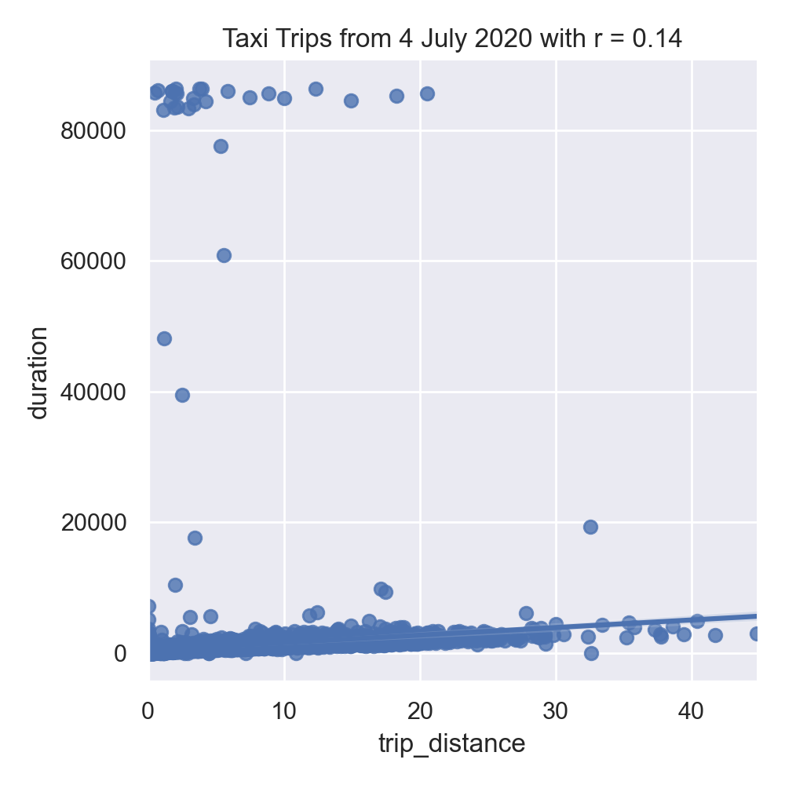

Program 9: Logistic Taxi
CSci 39542: Introduction to Data Science
Department of Computer Science
Hunter College, City University of New York
Spring 2022
Classwork Quizzes Homework Project
Program Description
Program 9: Logistic Taxis. Due noon, Thursday, 7 April.
As in Program 8, this program is tailored to the NYC OpenData Yellow Taxi Trip Data and follows standard strategy for data cleaning and model building:
In your program, include the following functions from Program 8. You may use your earlier function or the Program 8 solution available on Blackboard:
For example, let's start by setting up a DataFrame, as we did in Program 8, with the file, taxi_4July2020.csv, add in the tip and time features, and imputing missing values for which prints out the new columns:
We can add the indicators for if a toll was paid and if the trip started and ended in different boroughs:
Let's explore the data some, by making scatter plots of some of features:
The resulting images:

Interestingly, in our left image, the distance traveled and the duration of the trip are not strongly correlated. The middle image show negative correlation between trip distance and paying tolls, with outliers influencing the relationship. While the right images shows the trip distance positively correlated with trips that start and end in different boroughs.
Learning Objective: to train and validate models, given quantitative and qualitative data, as well as assessing model quality.
Available Libraries: pandas, datetime, pickle, sklearn, and core Python 3.6+.
(Note if you use our annonations, you should from typing import Union.)
Data Sources: Yellow Taxi Trip Data and NYC Taxi Zones from OpenData NYC.
Sample Datasets: taxi_new_years_day_2020.csv,
taxi_4July2020.csv,
taxi_jfk_june2020.csv, and
taxi_zones.csv.

To identify which trips are most likely to cross between boroughs, this program will focus on building a logistic regression model on both the categorical and numerical features of our dataset.
The function specifications are below:
And write the following new functions:
import_data(file_name) -> pd.DataFrame:
This function takes as one input parameter:
The data in the file is read into a DataFrame, and the resulting DataFrame is returned. file_name: the name of a CSV file containing Yellow Taxi Trip Data from OpenData NYC.
(Note this is identical to the function with the same name in Program 8. You may use your earlier function or the Program 8 solution available on Blackboard.)
add_tip_time_features(df) -> pd.DataFrame:
This function takes one input:
The function computes 3 new columns:
df: a DataFrame containing Yellow Taxi Trip Data from OpenData NYC.
The original DataFrame with these additional three columns is returned.
percent_tip: which is 100*tip_amount/(total_amount-tip_amount)
duration: the time the trip took in seconds.
dayofweek: the day of the week that the trip started, represented as 0 for Monday, 1 for Tuesday, ... 6 for Sunday.
(Note this is identical to the function with the same name in Program 8. You may use your earlier function or the Program 8 solution available on Blackboard.)
impute_numeric_cols(df, x_num_cols) -> pd.DataFrame:
This function takes two inputs:
Missing data in the columns df: a DataFrame containing Yellow Taxi Trip Data from OpenData NYC.
x_num_cols: a list of numerical columns in df.
x_num_cols are replaced with the median of the column. Returns a DataFrame containing only the imputed numerical columns from input df.
(Note this is identical to the function with the same name in Program 8. You may use your earlier function or the Program 8 solution available on Blackboard.)
add_boro(df, file_name) -> pd.DataFrame:
This function takes as two input parameters:
Makes a DataFrame, using df: a DataFrame containing Yellow Taxi Trip Data from OpenData NYC.
file_name: the name of a CSV file containing NYC Taxi Zones from OpenData NYC.
file_name, to add pick up and drop off boroughs to df.
In particular, adds two new columns to the df:
Returns PU_borough that contain the borough corresponding to the pick up taxi zone ID (stored in PULocationID), and
DO_borough that contain the borough corresponding to the drop off taxi zone (stored in DOLocationID)
df with these two additional columns (PU_borough and DO_borough).
add_flags(df) -> pd.DataFrame:
This function takes one input parameter:
Adds two new columns:
df: a DataFrame containing Yellow Taxi Trip Data from OpenData NYC to which add_boro() has been applied.
Returns paid_toll which is 1 if a toll was paid on the trip and 0 in no tolls were paid.
cross_boro which is 1 if the trip started and ended in different borough, and 0 if the trip started and ended in the same borough.
df with these two additional columns (paid_toll and cross_boro).
encode_categorical_col(col,prefix) -> pd.DataFrame:
This function takes two input parameters:
Takes a column of categorical data and uses categorical encoding to create a new DataFrame with the k-1 columns, where k is the number of different nomial values for the column. Your function should create k columns, one for each value, labels by the prefix concatenated with the value. The columns should be sorted and the DataFrame restricted to the first k-1 columns returned. For example, if the column contains values: 'Bronx', 'Brooklyn', 'Manhattan', 'Queens', and 'Staten Island', and the col: a column of categorical data.
prefix: a prefix to use for the labels of the resulting columns.
prefix parameter has the value 'PU_', then the resulting columns would be labeled: 'PU_Bronx', 'PU_Brooklyn', 'PU_Manhattan', 'PU_Queens', and 'PU_Staten Island'. The last one alphabetically is dropped (in this example, 'PU_Staten Island') and the DataFrame restricted to the first k-1 columns is returned. Note: we presented several different ways to categorically encode nomial data in Lecture 14. The book details an approach using sklearn in Chapter 20,
and you may find Panda's get_dummies useful.
split_test_train(df, xes_col_names, y_col_name,
test_size=0.25, random_state=12345) -> Union[pd.DataFrame, pd.Series()]:
This function takes 5 input parameters:
Calls sklearn's train_test_split function to split the data set into a training and testing subsets: x_train, x_test, y_train, y_test. The resulting 4 subsets are returned.df: a DataFrame containing Yellow Taxi Trip Data from OpenData NYC to which add_boro() has been applied.
y_col_name: the name of the column of the dependent variable.
xes_col_names: a list of columns that contain the independent variables.
test_size: accepts a float between 0 and 1 and represents the proportion of the data set to use for training. This parameter has a default value of 0.25.
random_state: Used as a seed to the randomization. This parameter has a default value of 12345.
Hint: see the examples for Program 8 for a similar splitting of data into training and testing datasets.
fit_logistic_regression(x_train, y_train,penalty='none'): -> object
This function takes three input parameter:
Fits a logistic regression model to the x_train: the indepenent variable(s) for the analysis.
y_train: the dependent variable for the analysis.
penalty: the type of regularization applied. The default value for this parameter is 'none'.
x_train and
y_train data, using the logistic model from sklearn.linear_model. The model should use the solver = 'saga' to allow all the options for regularization (called penalty as the option to the model) be any of 'elasticnet', 'l1',
'l2', and 'none'). The resulting model should be returned as bytestream, using pickle.
predict_using_trained_model(mod_pkl, x, y): -> float,float
This function takes three inputs:
Computes and returns the mean squared error and r2 score between the values predicted by the model (mod_pkl: a trained model for the data, stored in pickle format.
x: an array or DataFrame of numeric columns with no null values.
y: an array or DataFrame of numeric columns with no null values.
mod on x) and the actual values (y). Note that sklearn.metrics contains two functions that may be of use: mean_squared_error and r2_score.
passenger_count:
Next, let's use our new functions to add in boroughs for the pick up and drop off locations:
df = import_data('taxi_4July2020.csv')
df = add_tip_time_features(df)
df['passenger_count'] = impute_numeric_cols(df,['passenger_count'])
df = answer.add_boro(df,'taxi_zones.csv')
print('\nThe locations and borough columns:')
print(f"{df[['PULocationID','PU_borough','DOLocationID','DO_borough']]}")The locations and borough columns:
PULocationID PU_borough DOLocationID DO_borough
0 100 Manhattan 249 Manhattan
1 235 Bronx 213 Bronx
2 141 Manhattan 82 Queens
3 90 Manhattan 90 Manhattan
4 79 Manhattan 263 Manhattan
... ... ... ... ...
14412 163 Manhattan 162 Manhattan
14413 74 Manhattan 41 Manhattan
14414 162 Manhattan 238 Manhattan
14415 138 Queens 107 Manhattan
14416 48 Manhattan 74 Manhattan
[14417 rows x 4 columns]
prints:
df = add_flags(df)
print(df[['trip_distance','PU_borough','DO_borough','paid_toll','cross_boro']])
trip_distance PU_borough DO_borough paid_toll cross_boro
0 1.70 Manhattan Manhattan 1 0
1 5.25 Bronx Bronx 1 0
2 5.50 Manhattan Queens 1 1
3 0.40 Manhattan Manhattan 1 0
4 4.50 Manhattan Manhattan 1 0
... ... ... ... ... ...
14412 1.78 Manhattan Manhattan 1 0
14413 0.92 Manhattan Manhattan 1 0
14414 4.60 Manhattan Manhattan 1 0
14415 11.10 Queens Manhattan 0 1
14416 5.08 Manhattan Manhattan 1 0
[14417 rows x 5 columns]import matplotlib.pyplot as plt
import seaborn as sns
sns.set_theme(color_codes=True)
sns.lmplot(x="trip_distance", y="duration", data=df)
tot_r = df['trip_distance'].corr(df['duration'])
plt.title(f'Taxi Trips from 4 July 2020 with r = {tot_r:.2f}')
plt.tight_layout() #for nicer margins
plt.show()
sns.lmplot(x="trip_distance", y="paid_toll", data=df,fit_reg=False)
dist_r = df['trip_distance'].corr(df['paid_toll'])
plt.title(f'Taxi Trips from 4 July 2020 with r = {dist_r:.2f}')
plt.tight_layout() #for nicer margins
plt.show()
sns.lmplot(x="trip_distance", y="cross_boro", data=df,fit_reg=False)
dist_r = df['trip_distance'].corr(df['cross_boro'])
plt.title(f'Taxi Trips from 4 July 2020 with r = {dist_r:.2f}')
plt.tight_layout() #for nicer margins
plt.show()

More details to follow...